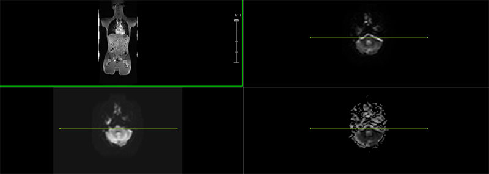
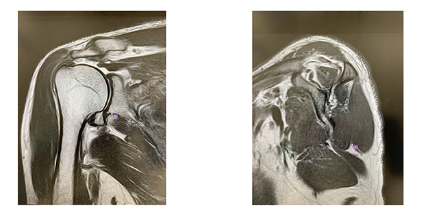
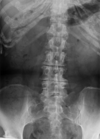

MRI・CT
MRIとは
MRI（Magnetic Resonance Imaging：磁気共鳴画像撮影装置）とは、強い磁石と電波を用いて人の体内を撮影し、断面像として描き出す検査です。
MRI検査は脳や脊髄などの神経系、血管、腱や筋肉・関節などを見るのに適しています。
また、骨の影響を受けないため、骨に囲まれた脳や脊髄、骨盤の中にある子宮・卵巣や前立腺などの診断によく用いられています。
色の濃淡がはっきり出るので、正常な組織とがんなどの異常な組織を見分けることが得意です。
MRI検査が必要とされるのは、まず第一に、ほぼ全てのがんを始め、さまざまな病気を早期に見つけたい場合です。
特に乳がんでは、MRI検査でしか確認できない多発乳がんの報告が数多くあり、早期発見のためには欠かせない検査となっています。
また、胸椎・腰椎椎間板ヘルニア、脊髄損傷、靭帯・半月板損傷など、整形外科領域の診断や治療方針の決定、経過観察にも欠かせない検査となっています。
さらに、発症早期の脳梗塞や小さい脳動脈奇形・脳腫瘍など、特に脳神経外科領域ではMRIのみで診断が可能な病気も数多く存在します。

MRIでわかること

MRIは強い磁石と電波を用いて、体内の一部分の断面像を撮像します。放射線を使用しないので、被曝がないのが特徴です。
MRIは全身の骨や筋肉や腱、血管、神経などをみるのが得意です。色の濃淡がはっきりしているため、例えば腫瘍など、正常組織と異常な組織を見分けるのに向いています。
部位では、脳や脊髄（せきずい）、四肢の関節、そして骨盤内臓器（特に男性では前立腺、女性では子宮・卵巣）の撮影に優れています。
MRIでわかる主な病気
整形外科領域
- 脊髄の異常：頚椎症、胸椎・腰椎ヘルニア、脊髄腫瘍、脊髄奇形など
- 骨の異常：骨軟部腫瘍
- 関節の異常：靭帯損傷、半月板損傷など
脳神経外科領域
- 脳梗塞：CTではわからない発症直後の脳梗塞の診断が可能
- 脳腫瘍
- 脳動脈奇形、脳動脈瘤など血管の異常
内科領域
- ほぼすべてのがん（特に、脳、乳腺、肝臓、子宮、卵巣、前立腺、骨軟部など）
- 肝臓や膵臓などの腫瘍、胆道や膵管などの病気
- 子宮や卵巣などの異常
- 腎臓、膀胱、尿管の異常
その他
- 耳鼻咽喉科領域：内耳、咽頭・喉頭の異常など
- 眼科領域：眼球の異常など
MRIでは見つけにくい病気
広い範囲を一度に撮影することは難しく、例えば交通外傷など、見たい範囲が広い場合はCTの方が適しています。
また、空気と骨の区別がつかないこと、体の小さな動き（例えば心臓の拍動など）でも画像に乱れが出ることなどから、肺の病気の診断には不向きです。
CTとは
CT（Computed Tomography：コンピュータ断層診断装置）とは、放射線（X線）を利用して人の体内を撮影し、断面像として描き出す検査です。
短時間で広い範囲を撮像することができるため、救急医療の現場をはじめとして、非常に良く用いられている検査です。
また、解像度が高く細かい画像が得られるので、小さながんの転移などを見つけるのが得意です。
CT検査が必要な場合は、まず第一に救急医療の現場です。
交通外傷や頭部外傷による骨折、脳出血・くも膜下出血など、診断と治療に一刻を争うような怪我・病気が疑われる場合には、CT検査は必須のものとなります。
その他、体の広い範囲を一度に確認したい場合（がんの転移の検索など）や骨の情報が必要な場合（骨折、骨転移など）、肺の病気の診断・経過観察などを目的とする場合もCT検査が必要です。

CTでわかること
CTは広い範囲を短時間で一度に撮像することができるのが大きな特長の一つです。
交通事故や脳出血など、緊急を要する場合の撮像はCTの方が適しています。
またCTは、3次元的にデータを収集でき、解像力に優れています。0.5mm以下の小さな病変まで検出する事ができるため、病期の早期発見が可能です。
CTでわかる主な病気
整形外科領域
- 交通外傷
- 骨折
脳神経外科領域
- くも膜下出血
- 脳出血
内科領域
- 血液も含めたほぼ全てのがん
- 肺の病変：肺がんや肺炎など
- 腸炎や腸閉塞など
- 尿路結石
その他
- 全身の緊急検査
CTでは見つけにくい病気
脳、乳腺、肝臓、子宮、卵巣、前立腺、骨軟部などのがんは、CT検査では正常な組織との区別がつきにくいため不得意です。
また、血管や腫瘍の状態を確認するには、造影剤という薬剤が必要となることが多いです。